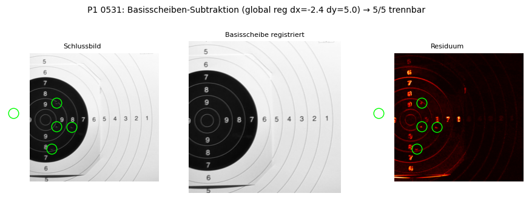
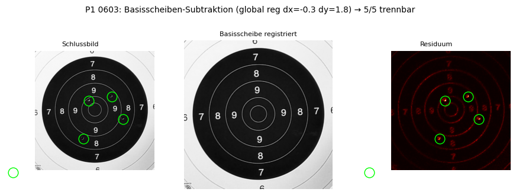
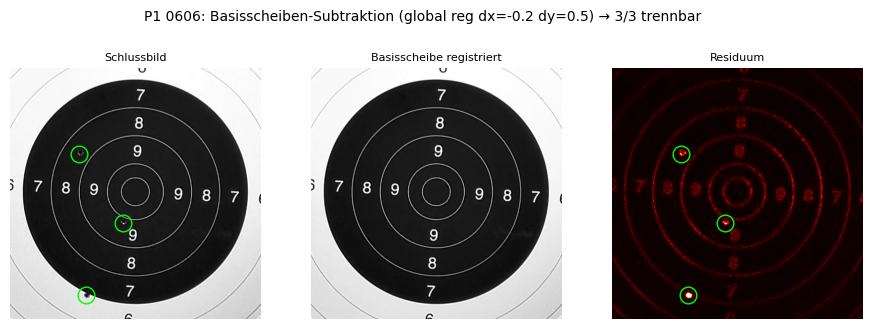
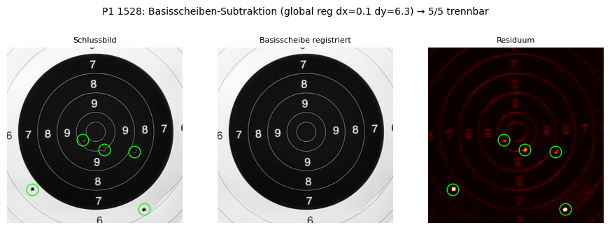
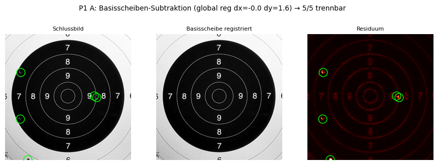
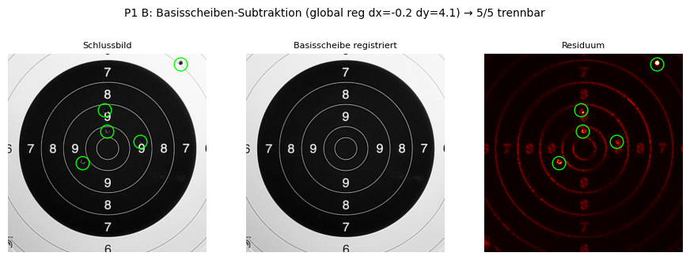
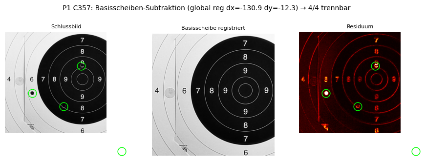

Pro Session 3 Panels: links Schlussbild · Mitte registrierte Basisscheibe · rechts Residuum (heiss=hoch). Gruene Kreise = echte Treffer (GT). Gesucht im Residuum: leuchten nur die Loecher, oder auch Kanten/Ziffern-Reste (=Phantome)?






